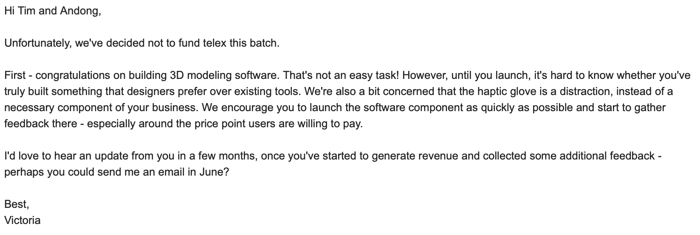

Occasionally I have thoughts, and sometimes I even write them down! Here's the highlight reel:
Entry 8 - Our YC application
22 June 2021
We applied to ycombinator S21 this past spring with our
haptic glove and
3D modeling app project. Here's
our written application — it's a bit longer than Drew Houston's, but then again our product is a lot more complicated than Dropbox. We got an interview, prepped like crazy for it, then got called back for a
second interview, all before finally being rejected. They sent us a very nice email though explaining why they wouldn't fund us for this batch, so no hard feelings. Here's the email:

Entry 7 - Hegel's lectures on aesthetics
18 January 2020
I had to read Hegel's "Aesthetics: Lectures on Fine Arts" for my architecture seminar, 'Style.' At first I
thought it was absolutely terrible, but then I realized that it was just the introduction that was terrible
and that the rest was actually pretty good. The purpose of the chapters that I read was to present a consistent
formulation of why certain buildings belong to certain styles. Hegel didn't start by observing visual features
or by classifying buildings according to chronology (as most authors do), but by defining three abstract
types of architecture:
- Symbolic: structures created purely to express an idea. Example: monuments. Essential, because meaning is inherent in it. (Human instinct)
- Classical: structures that express ideas but also take into account constraints, such as the laws of physics and the laws of the culture. These structures find beauty specifically in that satisfaction of constraint. Existential, because meaning is ascribed to it by the user. (The mind, the intellect)
- Romantic: structures with a higher purpose that is fulfilled by both expressing an idea and catering to a very human need. (i.e. churches that esteem god by striving upwards, while simultaneously providing an enclosed space that mirrors its users' inward facing souls). Existential and essential. (The heart, the soul)
To put it in simpler terms: symbolic architecture is inferred, classical architecture is discerned, and romantic architecture is felt.
Each of the types has a lot more to them than what I've said so far, but that's the gist. Hegel's writing is dense,
complex, and quite often infuriating, but it's worth slogging through it to uncover the ideas he presents. As usual
whenever I read any architectural theory of merit, I have a few thoughts about it:
- On first glance, it seems the Hegel has this grand theory for these different types of architectures and then, oh look, these different types of architectures exemplify points in his theory. But what's probably really true is that he saw these different styles and felt the need to explain why they were the way they were. This could be one reason why there isn't much motivation in his lectures. Of course, this doesn't take away from the validity of his ideas, but it's important to realize that these styles exist completely independently of his theories for them, and are thus free to be associated with any other theory of how they came about. Hegel doesn't acknowledge this. A lot of what he's saying I very much agree with, because I've noticed those same things myself. I don't know, however, if his theories would hold up or be relevant when we consider the later developments of modernism.
- According to Hegel, gothic buildings strive upwards (have strong vertical lines) because the buildings themselves aspire to a higher purpose, which is to praise god. They are, in this way, majestic and soaring. Gothic buildings give "the impression of tranquility of the heart which, released from the external world of nature and from the mundane in general, is shut upon itself." But also, they give "the impression of a majestic sublimity which aspires beyond and out-soars mathematical limitation" pg. 686. Hegel focuses on romantic (gothic) architecture having a complete separation from the outside world. This seems consistent with most of the truly gothic works I've seen: they are dim inside, promoting self reflection and tranquility. Franklin and Murray, on the other hand, are not about that at all. They are showy and flashy, and clearly the intention is not for inward soul searching. So by hegel's definition, they are not gothic even though they contain many gothic elements and are often said to emulate the gothic style.
- Example on pg. 689: eye tracing over vertical lines on gothic pillars because the pillars are too big for the eye to take in all at once. The experience of perceiving gothic architecture mirrors the themes of the forms of gothic architecture: verticality. Eye is forcibly drawn upwards just as the forms forces your soul to be drawn inwards, toward god.
- When postmodernists appropriated the column, they often included it in situations where it didn't actually support anything, and the top of the column was left empty. This is in direct contrast to "classical" architecture, where the only two purposes of a column are to bear weight and to indicate that it is bearing weight. Hegel says "walls rising at obtuse angles give the eye the impression of impending collapse" as if that is a bad thing, but this is one of the emotions that post-modernists sought.
- Is romantic architecture unique in that perception of it is necessarily dynamic? Symbolic and classical architecture can be perceived fully by standing still and looking at the forms, from which one can draw meaning ("Architecture as frozen music," pg. 662). But to feel the might and majesty of gothic architecture, one needs to move around and look at the forms, where the gaze is pushed and pulled in various directions by the strong and sweeping lines.
- Based on my interpretation that symbolic architecture is inferred, classical architecture is discerned, and romantic architecture is felt -----> the international style is classical, brutalism is romantic.
Entry 6 - Trip to New York
21 September 2019
I went to New York this past weekend and got to look at a lot of buildings. Check out my
new post on the architecture blog, where I discuss my search for urbanism in NY.
Entry 5 - I just finished Middlemarch
12 September 2019
I just finished Middlemarch, so, to all my loyal followers out there, you should be
expecting a new post in the literature blog about that sometime in the next few days. It's going
to take me a bit of time to process the book, and another bit of time for me to put my thoughts
into coherent sentences. However, I can say now, in anticipation of a glowing review, that
Middlemarch is worthy of all the praise that's ever been bestowed upon it.
Entry 4 - Check out my two new topic blogs!
20 July 2019, 2 PM
After adding my new review of Sense and Sensibility to this page this afternoon, I realized that this
blog was becoming cluttered with a bunch of unrelated posts, so I decided to create two designated blogs: one
for my literature reviews and one for my random thoughts on math and physics. Check em out!!
Entry 3 - A day at work (sort of)
11 June 2019, 5 PM
Sorta a weird day at work. Without going into too much detail, the problem I was working on essentially had to do with dynamic modeling of complex 3D geometry. Most CAD programs can handle the visual representation part of this but they can't really generate (or at least reveal to the user) the quantities that I was after. Yesterday I worked on a basic mathematica script that computed the relevant 2D geometric quantities, but it wasn't super satisfying because it didn't give me some of the 3D-based information I wanted. So I spent most of today learning how to implement 3D object modeling in python (using OpenGL) which ended up turning into me writing a very rudimentary CAD program.
Along the way I got frustrated by the inefficiency of representing complex 3D geometries by specifying Euclidean points and connecting them with lines. It's so unnatural! It was even more frustrating because, while I was doing this, I had to look at physical objects on my desk and be mocked by how easily they "computed" their own position and orientation in space. If my Gatorade bottle and my laptop wanted to detect a collision, all they had to do was try to pass through each other, and the laws of physics would've handled all the relevant "modeling." Using a computer to perform the same computation requires crunching thousands of number (not even in parallel!) to check if two surfaces (not even represented in a natural geometry!) are at risk of passing through each other.
Long story short, I spent a while trying to figure out a more natural way to represent 3D objects and compute their movement in space, which is a much larger problem than the one I initially set out to solve. Needless to say, I didn't solve either of them. Back to mathematica I guess.
Entry 2 - Check out big brain!
9 June 2019, 9 PM
I've gotten a lot of content up on the website in the past 2 hours, but currently the only project
I've added to is Big Brain (under the projects page), so I'd definitely encourage y'all to go
check that out. It's super cool stuff!
Entry 1 - First post
9 June 2019, 7 PM
Currently sitting on a bus travelling from Austin to Houston. Daniel is sitting next to me reorganizing
his MatLAB code...typical. It's a bit exciting right now cause we just got alerts on our phones saying there's
a tornado warning in the region we're travelling through. We haven't seen any yet, but we did notice
some ominous clouds. The Texan landscape is good for cloud watching since the sky is so big. I've been
meaning to make this website for a while, and now, mainly due to boredom on this bus ride, I've finally
found the time. I'd like my website to have a brutalist aesthetic (google "brutalist websites" if you're
wondering what I mean), but I don't know enough HTML yet to have much control over how the site looks. I think,
for now, this retro 90s look will have to do.